Data Wrangling in Excel
This training module was developed by Alexis Payton, Elise Hickman, and Julia E. Rager.
All input files (script, data, and figures) can be downloaded from the UNC-SRP TAME2 GitHub website.
Introduction to Training Module
This module is intended to be a starting guide to cleaning and organizing an example toxicology dataset in Excel. Data wrangling involves cleaning, removing of erroneous data, and restructuring necessary for to preparing wet lab generated data for downstream analyses. These steps will ensure that:
- Data are amenable to downstream analyses in R, or your preferred programming language
- Data are clear and easily interpretable by collaborators, reviewers, and readers
Click here for more information on data wrangling.
In this training tutorial, we’ll make use of an example dataset that needs to be wrangled. The dataset contains concentration values for molecules that were measured using protein-based ELISA technologies. These molecules specifically span 17 sterols and cytokines, selected based upon their important roles in mediating biological responses. These measures were derived from human serum samples. Demographic information also exists for each subject.
The following steps detailed in this training module are by no means exhaustive! Further resources are provided at the end. This module provides example steps that are helpful when wrangling your data in Excel. Datasets often come in many different formats from our wet bench colleagues, therefore some steps will likely need to be added, removed, or amended depending on your specific data.
Save a Copy of the Soon-To-Be Organized and Cleaned Dataset as a New File
Open Microsoft Excel and prior to ANY edits, click “File” –> “Save As” to save a new version of the file that can serve as the cleaned version of the data. This is very important for file tracking purposes, and can help in the instance that the original version needs to be referred back to (e.g., if data are accidentally deleted or modified during downstream steps).
- The file needs to be named something indicative of the data it contains followed by the current date (e.g., “Allostatic Mediator Data_061622”).
- The title should be succinct and descriptive.
- It is okay to use dashes or underscores in the name of the title.
- Do not include special characters, such as $, #, @, !, %, &, *, (, ), and +. Special characters tend to generate errors on local hard drives when syncing to cloud-based servers, and they are difficult to upload into programming software.
Let’s first view what the dataset currently looks like:
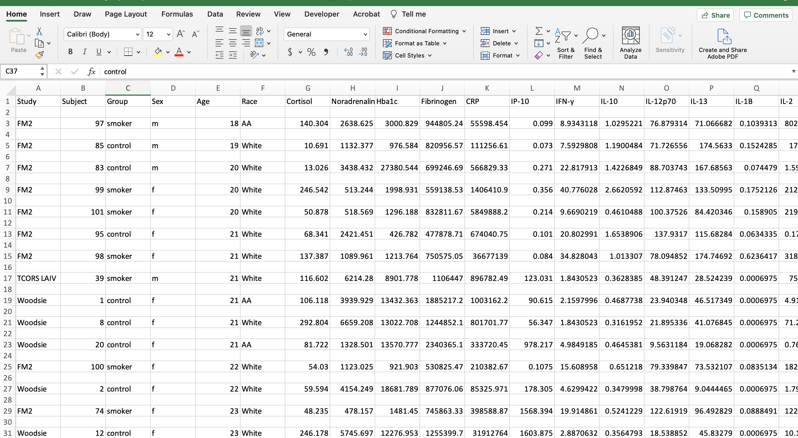
Helpful Excel Keyboard Shortcuts
The following keyboard shortcuts can help you work more efficiently in Excel:
- Move to the last cell in use on the sheet
- Control + Fn + Right arrow key (Mac users)
- Control + End (PC users)
- Move to the beginning of the sheet
- Control + Fn + Left arrow key, then same Control + Fn + Up arrow key (Mac users)
- Control + Home (PC users)
- Highlight and grab all data
- Click on the first cell in the upper left hand corner then click and hold Shift + Command + Down arrow key + Right arrow key (Mac users)
- Shift + Command + Down arrow key + Right arrow key (PC users)
Note: This only works if there are no cells with missing information or gaps in the columns/rows used to define the peripheral area.
For more available shortcuts on various operating systems click here.
Remove Extraneous White Space
Before we can begin organizing the data, we need to remove the entirely blank rows of cells. This reduces the file size and allows for the use of the filter function in Excel, as well as other organizing functions, which will be used in the next few steps. This step also makes the data look more tidy and amenable to import for coding purposes.
- Excel Trick #1: Select all lines that need to be removed and press Control + minus key for Mac and PC users. (Note that there are other ways to do this for larger datasets, but this works fine for this small example.)
- Excel Trick #2: An easier way to remove blank rows and cells for larger datasets, includes clicking “Find & Select”–> “Special” –> “Blanks” –> click “OK” to select all blank rows and cells. Click “Delete” within the home tab –> “Delete sheet rows”.
After removing the blank rows, the file should look like the screenshot below. 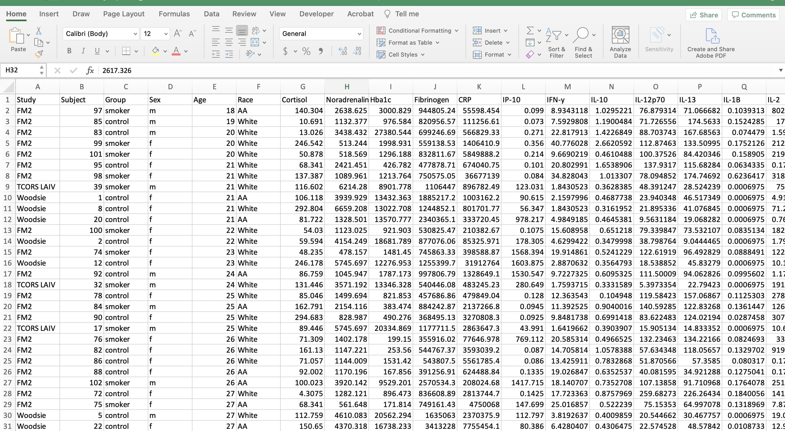
Replace Missing Data with “NA”
There are many ways missing data can be encoded in datasets. This includes values like “blank”, “N/A”, “NA”, or leaving a cell blank. Replacing all missing values with “NA” values is done for 2 reasons:
- To confirm that the data is indeed missing
- R reads in “NA” values as missing values
To check for missing values, the filter function can be used on each column and only select cells with missing values. You may need to scroll to the bottom of the filter pop up window for numerical data. Enter “NA” into the cell of the filtered column. Double click the bottom right corner of the cell to copy the “NA” down the rest of the column.
There was no missing data in this dataset, so this step can be skipped.
Create a Metadata Tab
Metadata explains what each column represents in the dataset. Metadata is now a required component of data sharing, so it is best to initiate this process prior to data analysis. Ideally, this information is filled in by the scientist(s) who generated the data.
- Create a new tab (preferably as the first tab) and label it “XXXXX_METADATA” (ie., “Allostatic_METADATA”)
- Then relabel the original data tab as “XXXX_DATA” (ie., “Allostatic_DATA).
- Within the metadata tab, create three columns: the first, “Column Identifier”, contains each of the column names found in the data tab; the second, “Code”, contains the individual variable/ abbreviation for each column identifier; the third, “Description” contains additional information and definitions for abbreviations.
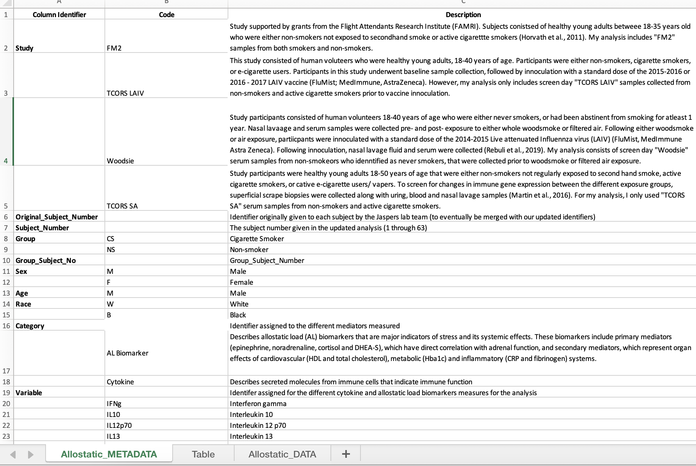
Abbreviate and Capitalize Categorical Data
Categorical data are easier to handle in programming languages when they are capitalized and abbreviated. It also helps reduce typos and potential typing mistakes within your script.
For this dataset, the following variables were edited:
- Group
- “control” became “NS” for non-smoker
- “smoker” became “CS” for cigarette smoker
- Sex
- “f” became “F” for female
- “m” became “M” for male
- Race
- “AA” became “B” for Black
- “White” became “W” for White
Excel Trick: To change cells that contain the same data simultaneously, navigate to “Edit”, click “Find”, and then “Replace”.
Once the categorical data have been abbreviated, add those abbreviations to the metadata and describe what they symbolize. 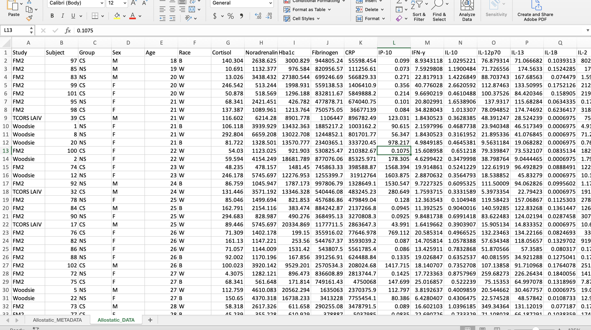
Alphabetize (Sort) the Data by the Categorical Variable of Interest
For this dataset, we will sort by the column “Group”. This organizes the data and sets it up for the next step.
- Highlight all the column headers.
- Click on the “Sort & Filter” button and click “Filter”.
- Click on the arrow on cell that contains the column name “Group” and click “Ascending”.
Create a New Subject Number Column
Analysis-specific subjects are created to give an ordinal subject number to each subject, which allows the scientist to easily identify the number of subjects. In addition, these new ordinal subject numbers will be used to create a subject identifier that combines both a subject’s group and subject number that is helpful for downstream visualization analyses.
- Relabel the subject number/identifier column as “Original_Subject_Number” and create an ordinal subject number column labeled “Subject_Number”.
R reads in spaces between words as periods, therefore it’s common practice to replace spaces with underscores when doing data analysis in R. Avoid using dashes in column names or anywhere else in the dataset. 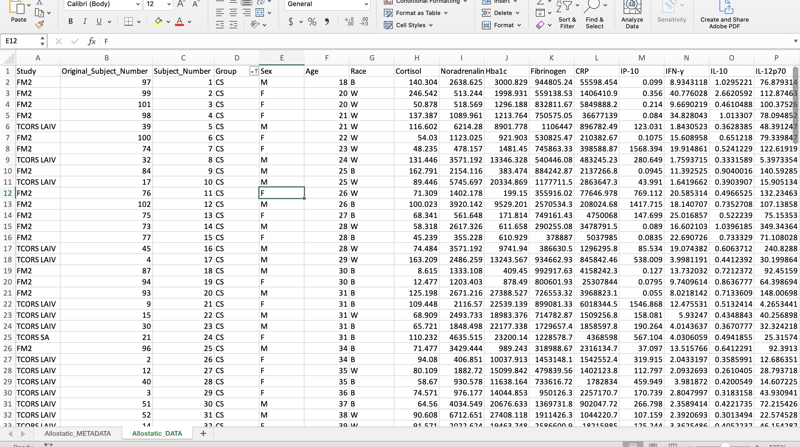
Remove Special Symbols and Dashes
Programming languages, in general, do not operate well with special symbols and dashes, particularly when included in column identifiers. For this reason, it is best to remove these while cleaning up your data, prior to importing it into R or your preferred programming software.
In this case, this dataset contains dashes and Greek letters within some of the column header identifiers. Here, it is beneficial to remove these dashes (e.g., change IL-10 to IL10) and replace the Greek letters with first letter of the word in English (e.g., change TNF-\(\alpha\) to TNFa).
Bold all Column Names and Center all Data
These data will likely be shared with collaborators, uploaded onto data deposition websites, and used as supporting information in published manuscripts. For these purposes, it is nice to format data in Excel such that it is visually appealing and easy to digest.
For example, here, it is nice to bold column identifiers and center the data, as shown below: 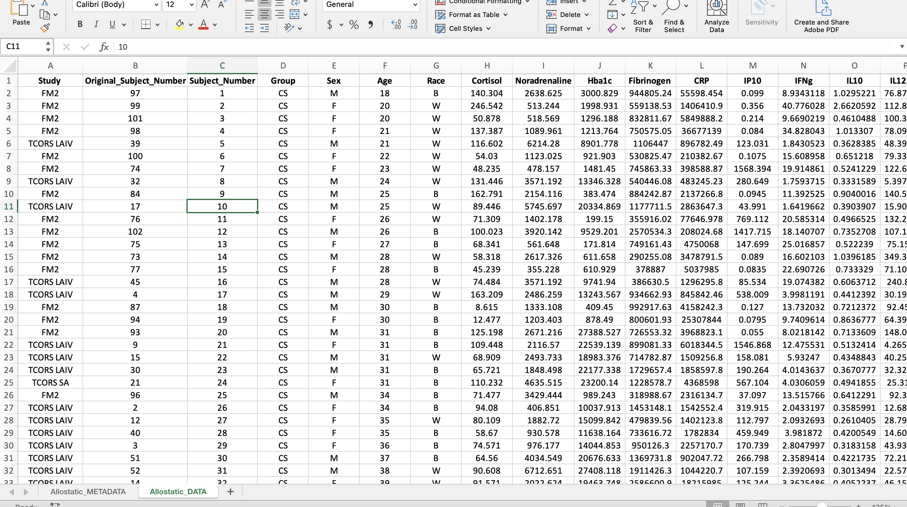
Create a Subject Identifier Column
The subject identifier column labeled, “Group_Subject_No”, combines the subject number with the variable of interest (ie. Group for this dataset). This is useful for analyses to identify outliers by the subject number and the group.
- Insert 2 additional columns where the current “Sex” column is.
- To combine values from two different columns, type “=CONCAT(D1,” _ “,C1)” in the first cell in the first column inserted.
- Double click the right corner of the cell for the formula to be copied to last row in the dataset.
- Copy the entire column and paste only the values in the second column by navigating to the drop down arrow next to “Paste” and click “Paste Values”.
- Label the second column “Group_Subject_No” and delete the first column.
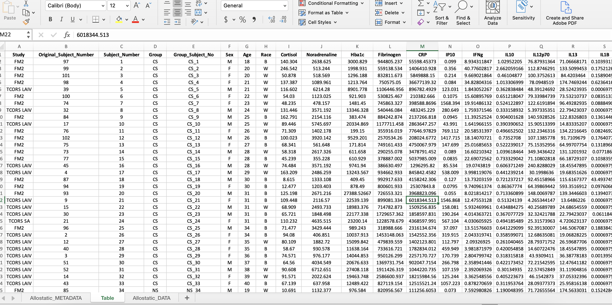
Separate Subject Demographic Data from Experimental Measurements
This example dataset is very small, so the demographic data (e.g., sex, race, age) was kept within the same file as the experimentally measured molecules. Though in larger datasets (e.g., genome-wide data, exposomic data, etc), it is often beneficial to separate the demographic data into one file that can be labeled according to the following format: “XXX_Subject_Info_061622” (ie. “Allostatic_Subject_Info_061622”).
This step was not completed for this current data, since it had a smaller size and the downstream analyses were simple.
Convert Data from Wide to Long Format
A wide format contains values that DO NOT repeat the subject identifier column. For this dataset, each subject has one row containing all of its data, therefore the subject identifier occurs once in the dataset.
Wide Format 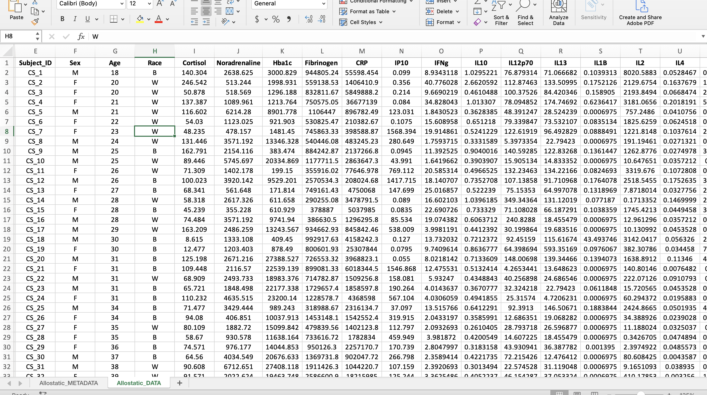
A long format contains values that DO repeat the subject identifier column. For this dataset, that means a new column was created entitled “Variable” containing all the mediator names and a column entitled “Value” containing all their corresponding values. In the screenshot, an additional column, “Category”, was added to help with the categorization of mediators in R analyses.
Long Format 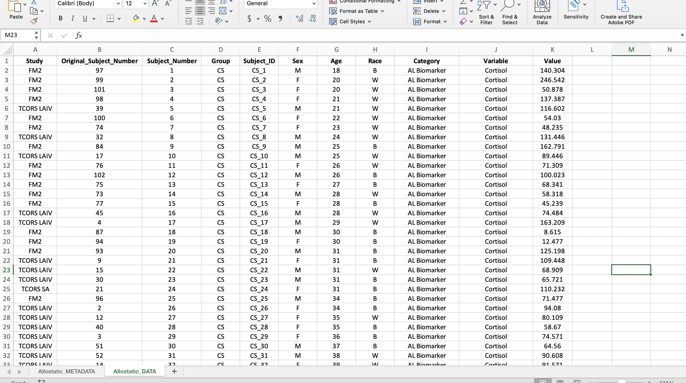
The reason a long format is preferred is because it makes visualizations and statistical analyses more efficient in R. In the long format, we were able to add a column entitled “Category” to categorize the mediators into “AL Biomarker” or “Cytokine” allowing us to more easily subset the mediators in R. Read more about wide and long formats here.
To convert the data from a wide to long format, follow the steps below:
Pivoting Data from a Wide to Long Format
To do this, a power query in Excel will be used. Note: If you are working on a Mac, you will need to have at least Excel 2016 installed to follow this tutorial, as Power Query is not avaialble for earlier versions. Add-ins are available for Windows users. See this link for more details.
Start by copying all of the data, including the column titles. (Hint: Try using the keyboard shortcut mentioned above.)
Click the tab at the top that says “Data”. Then click “Get Data (Power Query)” at the far left.
It will ask you to choose a data source. Click “Blank table” in the bottom row.
Paste the data into the table. (Hint: Use the shortcut Ctrl + “v”). At this point, your screen should look like the screenshot below. 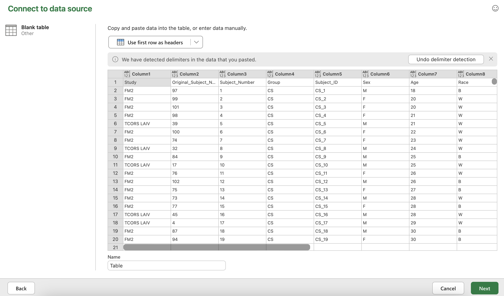
Click “Use first row as headers” and then click “Next” in the bottom right hand corner.
Select all the columns with biomarker names. That should be the column “Cortisol” through the end. 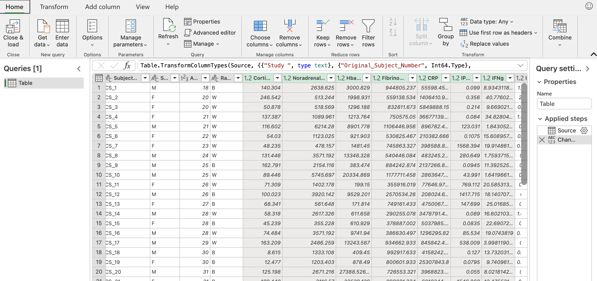
Click the “Transform” button in the upper left hand corner. Then click “Unpivot columns” in the middle of the pane. The final result should look like the sceenshot below with all the biomarkers now in one column entitled “Attribute” and their corresponding values in another column entitled “Value”. 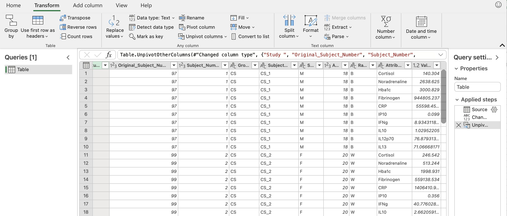
To save this, go back to the “Home” tab and click “Close & load”. You should see something similar to the screenshot below. 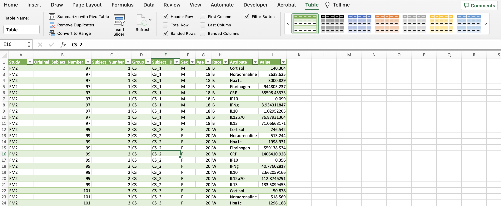
In the upper right with all the shaded tables (within the “Table” tab), click the arrow to the left of the green table until you see one with no shading. Then click the table with no colors.
Click “Convert to Range” within the “Table” tab. This removes the power query capabilities, so that the data is a regular excel sheet.
Now the “Category” column can be created to identify the types of biomarkers in the dataset. The allostatic load (AL) biomarkers denoted in the “Category” column include the variables Cortisol, CRP, Fibrinogen, Hba1c, HDL, and Noradrenaline. The rest of the variables were labeled as cytokines. Additionally, we can make this data more closely resemble the final long format screenshot by bolding the headers, centering all the data, etc.
We have successfully wrangled our data and the final dataset now looks like this: 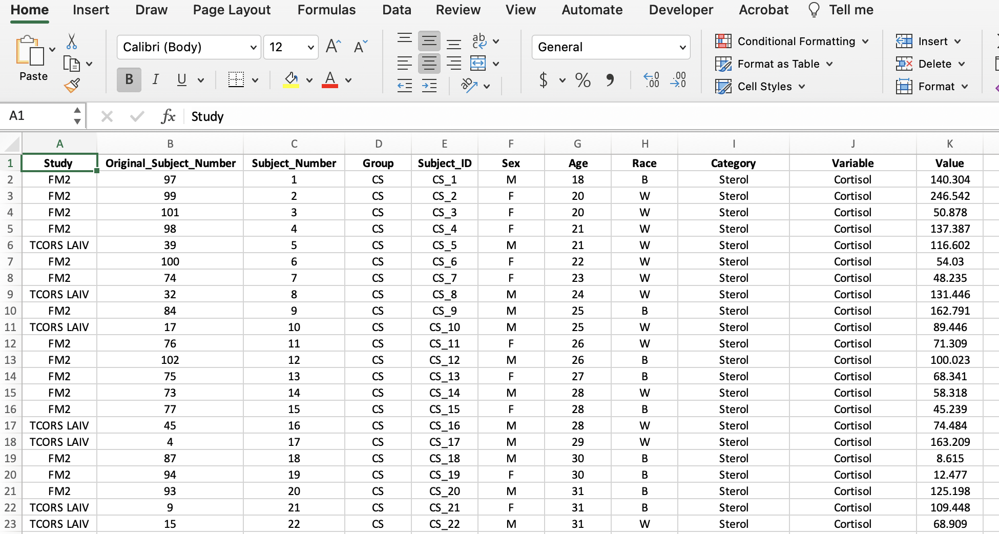
Generating Summary-Level Statistics with Pivot Tables
A PivotTable is a tool in Excel used to summarize numerical data. It’s called a pivot table, because it pivots or changes how the data is displayed to make statistical inferences. This can be useful for generating initial summary-level statistics to guage the distribution of data.
To create a PivotTable, start by selecting all of the data. (Hint: Try using the keyboard shortcut mentioned above.) Click “Insert” tab on the upper left-hand side, click “PivotTable”, and click “OK”. The new PivotTable should be available in a new sheet as seen in the screenshot below. 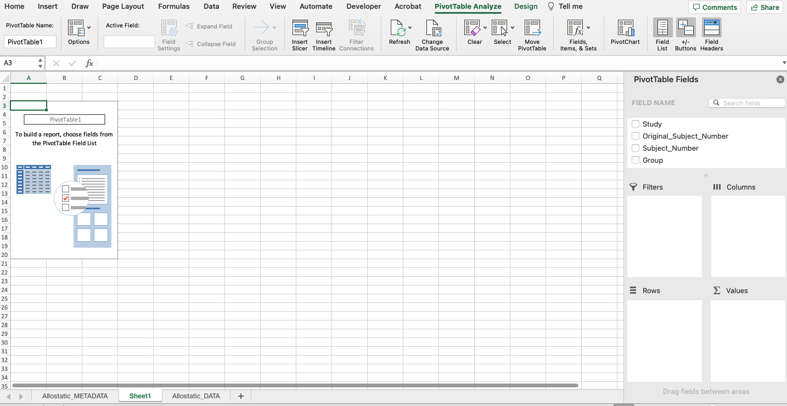
A PivotTable will be constructed based on the column headers that can be dragged into the PivotTable fields located on the right-hand side. For example, what if we were interested in determining if there were differences in average expression between non-smokers and cigarette smokers in each category of biomarkers? As seen below, drag the “Group” variable under the “Rows” field and drag the “Value” variable under the “Values” field. 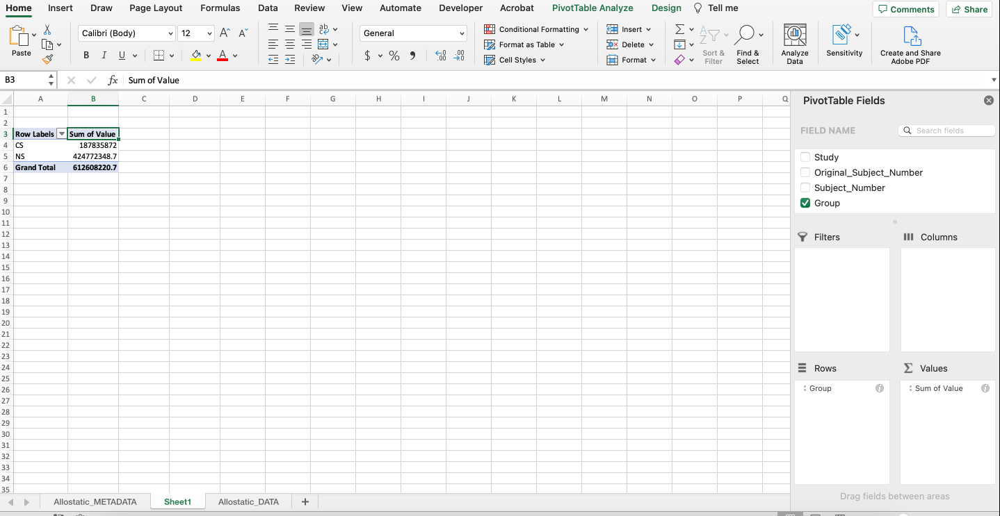
Notice that it automatically calculates the sum of the expression values for each group. To change the function to average, click the “i” icon and select “Average”. The output should mirror what’s below with non-smokers having an average expression that’s more than double that of cigarette smokers. 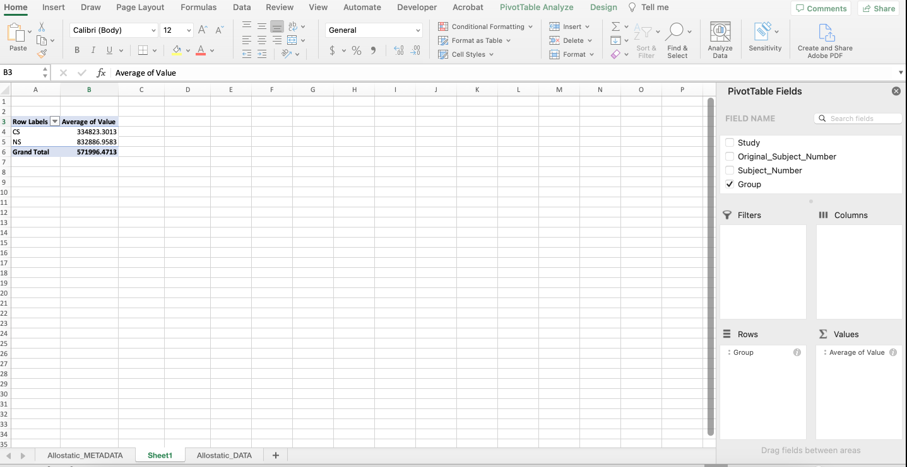
Excel vs. R: Which Should You Use?
For the most part, it’s better to perform final analyses in R (or another programming language) rather than Excel for the following reasons…
- R clearly shows the code (instructions), which makes editing, interpretability, and sharing easier. This makes analyses more reproducible and can save time.
- R has packages that makes more complex analyses possible (i.e., machine learning and heatmaps) that aren’t available in Excel.
- R can handle larger data sets.
- R can compute and process data faster.
However, Excel is still a software that has many benefits for running analyses including…
- Excel is user-friendly and most people have experience in navigating the software at a basic level.
- Excel can be faster for rudimentary statistical analyses and visualizations.
Depending on each scientist’s skill-level and the complexity of the analysis, Excel or R could be beneficial.
Concluding Remarks
In summary, this training module highlights the importance of data wrangling and how to do so in Microsoft Excel for downstream analyses. Concepts discussed include helpful Excel features like power queries and pivot tables and when to use Microsoft Excel vs. R.
Additional Resources
Data wrangling in Excel can be expedited with knowledge of useful features and functions to format data. Check out the resources below for additional information on Excel tricks.
- Try wrangling the “Module1_4_TYKInput.xlsx” to mimic the cleaned versions of the data found in “Module1_4_TYKSolution.xlsx”. This dataset includes sterol and cytokine concentration levels extracted from induced sputum samples collected after ozone exposure. After wrangling, you should end up with a sheet for subject information and a sheet for experimental data.
- Using the a PivotTable on the cleaned dataset, find the standard deviation of each cytokine variable stratified by the disease status.